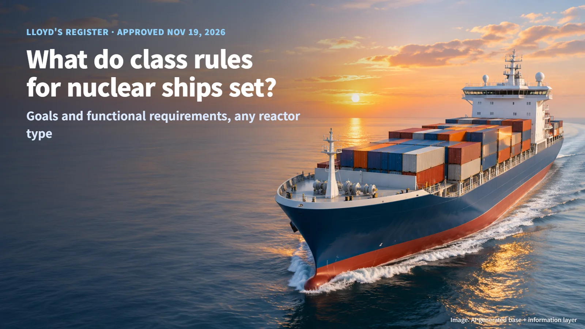
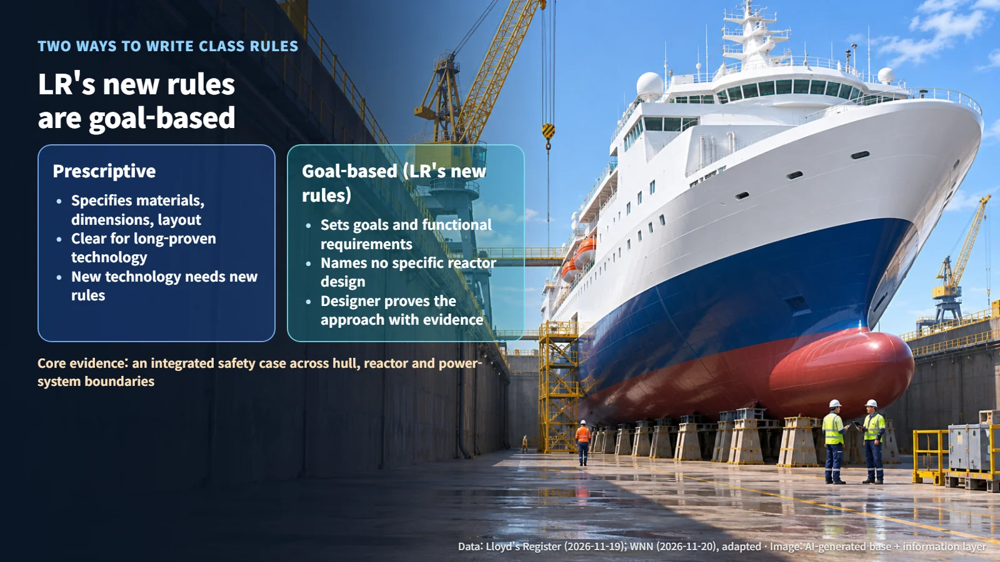
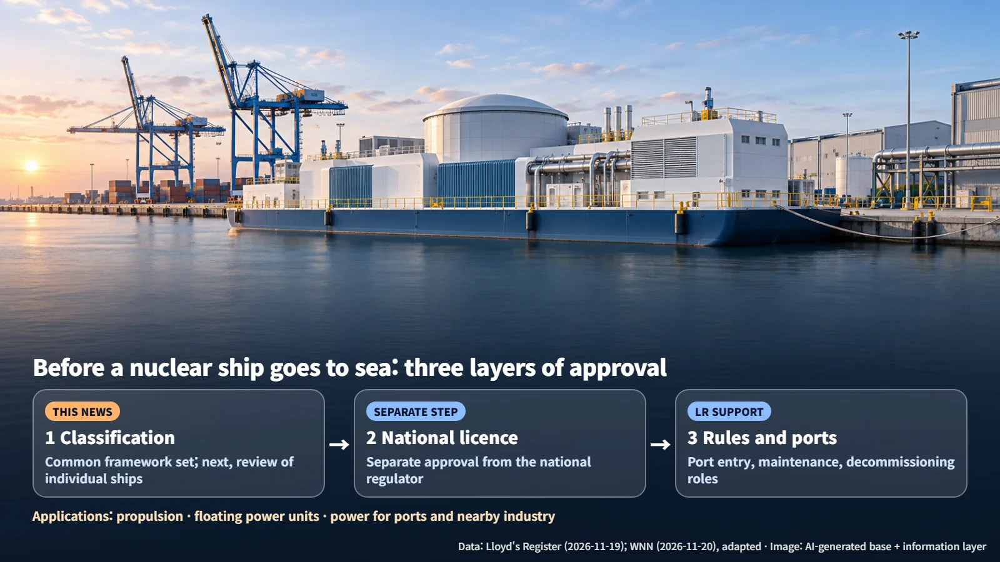

International · Classification · Marine nuclear
What Do Classification Rules for Nuclear Ships Actually Set? Lloyd's Register's Technology-Neutral Rules
Lloyd's Register has approved technology-neutral classification rules for ships and offshore units that integrate nuclear power, built on goals and functional requirements.
When people hear about putting a reactor on a ship, one question tends to come first: who checks that the vessel is safe, and against what standard? An earlier post on a nuclear-powered LNG carrier MOU looked at where ship-based reactors stand today. This time the progress comes from the rule-making side. On November 19, 2026, the classification society Lloyd's Register (LR) announced that it had approved classification rules for ships and offshore units that integrate nuclear power, and World Nuclear News (WNN) reported the announcement on November 20.

What Is Ship Classification, and What Do the New Rules Set?
Classification is the system by which a ship's design, construction and in-service condition are checked against a defined set of technical standards. The specialist bodies that carry out this assessment are called classification societies, and LR is one of them. A useful comparison is the type-approval body that confirms a new car model meets safety standards before it goes on sale. In shipping, a class certificate works as a basic statement that the vessel can be trusted, and it matters to insurers, lenders and ports.
The newly approved rules form a common assessment framework that went through LR's ships and offshore technical committee. Their main purpose is to let very different maritime nuclear projects be reviewed against the same framework at the concept stage.
What changes as a result? Developers now have a reference point that tells them, early in a project, what evidence they will need to prove their design. Instead of each project negotiating its own path from scratch, designers and technology developers can start from a shared set of expectations.
Rules That Leave the Reactor Choice Open: Goals and Functional Requirements
Classification rules can be written in two broad ways.
The first is prescriptive. Prescriptive rules specify the design in concrete terms: materials, dimensions, equipment arrangements. For technology that has been in service for decades, this is clear and convenient. Its drawback is that every genuinely new technology needs a new set of rules.
The second is goal-based. Goal-based rules define what has to be achieved, and the designer proposes how to achieve it, backed by supporting evidence.
LR's new rules take the second approach. Rather than naming a specific reactor design, they set out goals and functional requirements, and LR intends to develop them further as the technology matures and as international regulations evolve. Reactors being considered for maritime use cover a wide range of designs and sit at very different stages of development. A single yardstick that can assess many technologies fits that situation well.

LR said it will use its existing risk-based certification process to improve alignment between maritime requirements and nuclear licensing. In practice, the core of the evidence becomes an integrated safety assessment: one that ties together the design boundaries where hull, reactor and power systems meet, along with the accident conditions that cross those boundaries. That is the practical shift goal-based rules bring. The burden moves from ticking off a fixed design checklist to demonstrating, with evidence, that the whole integrated system meets the stated goals.
Where the Rules Apply: Propulsion, Floating Power, and Port Electricity
LR identified three broad areas where the rules can apply.
| Application | Role of the reactor | Focus of assessment |
|---|---|---|
| Ships with nuclear propulsion | Power source that moves the vessel | Integrated safety of hull and reactor at sea |
| Floating power units | A power plant on the water | Power generation while moored and the connection to the grid |
| Power supply to ports and nearby industry | Electricity for users on shore | Connection to port facilities and the surrounding industry |
(Source: Lloyd's Register announcement as reported by WNN, 2026-11-20, reorganized)
The three cases differ in whether the reactor is moving or stays in one place, and in how directly it connects to users on land. A propulsion reactor travels with the ship; a floating power unit stays moored; a port power supply links straight into onshore demand. Covering all three with one set of rules is only practical because the rules describe outcomes rather than hardware. Here the advantage of the goal-based approach shows up in the breadth of what the rules can cover.
The Remaining Gates Before a Nuclear Ship Goes to Sea
For a nuclear ship to actually operate, three layers of approval have to fit together.
- Classification review. The new rules are the assessment framework for this layer. The next step is for individual ship designs to go through actual review under these rules.
- National nuclear licensing. A vessel carrying a reactor also needs a licence from the nuclear regulator of the country concerned, as a separate step.
- International rules and port readiness. A ship that calls at ports in several countries needs international regulations, as well as preparation on the port side to assign responsibilities for port entry, maintenance and decommissioning.
This announcement completes the common standard for the first layer. Alongside it, LR is offering feasibility and integrated-risk advisory work, supporting the development of international regulations, and helping ports prepare. It also plans to announce further tools separately.

The points to watch next are the full text and scope of the rules, the evidence they will require, and when the first project goes through actual review under them.
Whether a reactor at sea is safe ultimately comes down to who checks it and against which standard. With these rules, the first piece of that standard is now in place. The next question is how national licensing and port rules will connect to this framework.